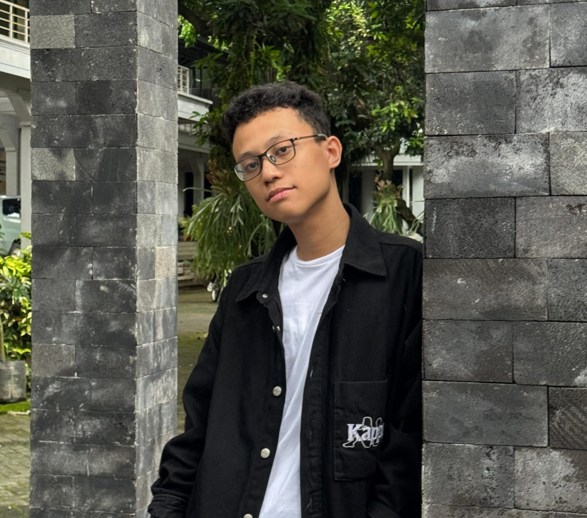
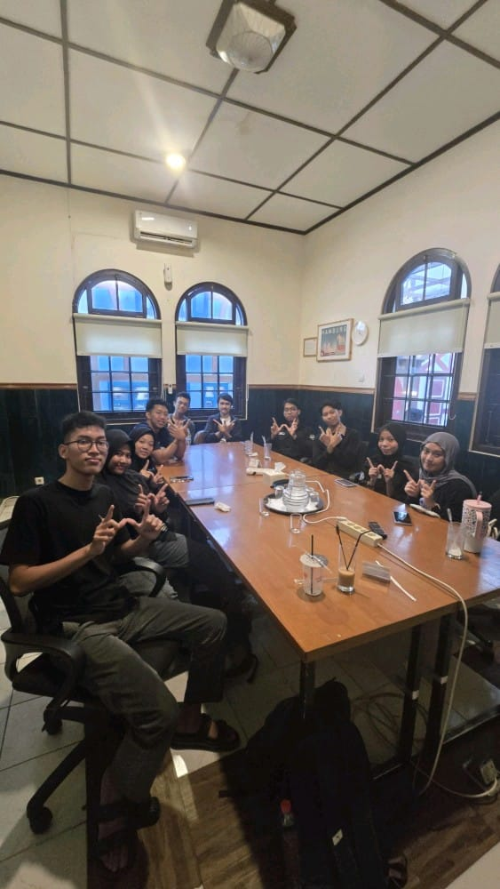
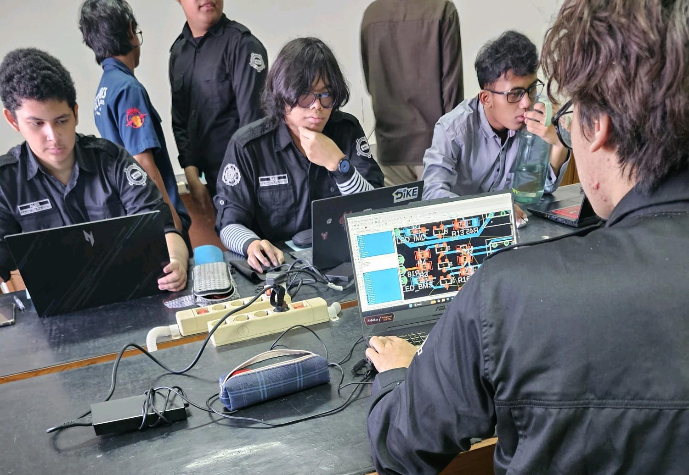

2nd Year Electronics and Instrumentation Student @ UGM • Web Developer • CMS Contributor
Hello! I’m Ali, an Electronics & Instrumentation student passionate about building digital products, contributing to web infrastructure, and guiding students in hands-on lab practices. I blend engineering logic with design for maximum impact.
Managed content publishing for ERC Website as part of the Website Development Division. Uploaded projects like Aeroponics Dashboard and Web Inklusi, supported CMS, integrated real-time dashboards, and organized documentation flow.
Tools: WordPress, Elementor, Media Tools
Website Development Team for ERC 2025
Back-End Developer for real-time flood and landslide early warning platform. Worked with UGM’s tech team to build robust APIs, connect MongoDB, and deliver stable backend services for the system.
Tools: Node.js, MongoDB, Express
Provided schematic guidance and fabrication support to 1st-year students in the PCB design practicum using Autodesk EAGLE.
Focus: PCB Design, EAGLE, Circuit Mentorship
Assisting 1st year Students in the making of PCB Schematic using Autodesk EAGLE
 Gmail
Gmail
 LinkedIn
LinkedIn